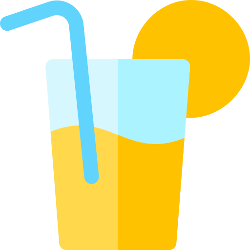

<!-- <ion-header>
  <ion-toolbar color="primary">
    <ion-title *ngIf="!isSearchbarOpened">bars</ion-title>
    <ion-searchbar *ngIf="isSearchbarOpened" showCancelButton="true" (ionCancel)="isSearchbarOpened=false; hideElem='block'; Filtereditems=items" (ionChange)="searchBar($event)"></ion-searchbar>
    <ion-button size="small" icon-only *ngIf="!isSearchbarOpened" (click)="isSearchbarOpened=true">
      <ion-icon name="search"></ion-icon>
    </ion-button>
  </ion-toolbar>
</ion-header>

<ion-content color="secondary">
    <div class="header-buttons">
      <div (click)="tousBtn()" [ngStyle]="{'background-color' : tous}">TOUS</div>
      <div (click)="offresBtn()" [ngStyle]="{'background-color' : offres}">OFFRES</div>
      <div (click)="top10Btn()" [ngStyle]="{'background-color' : top10}">TOP 10</div>
      <div (click)="presdemoiBtn()" [ngStyle]="{'background-color' : presdemoi}">PRES DE MOI</div>
    </div> -->
    <!-- <div class="container" [ngStyle]="{'display' : hideElem}">
      <h1 class="goUp"><ion-icon name="ribbon"></ion-icon>&nbsp;Top 10</h1>
      <div class="scroll" scrollY="true">
        <div *ngFor="let bars of Filtereditems; let i = index" class="bars goUp2">
            <div class="bubbles-wrapper" [class.displayBubbles]="disBub" [ngStyle]="{'z-index' : zindex}">
              <div class="bubbles"><div></div><div></div><div></div><div></div></div>
            </div>
            
            
            

            <div (click)="moveToBar(bars.ENT_ID)" class="img-overlay"></div>
            
            <div (click)="moveToBar(bars.ENT_ID)" class="bar-details">
              <p class="bar-nom">{{bars.ENT_NOM}}</p>
              <div class="note-sec">
                  
                  <p>(5.0/5.0)</p>
              </div>
              <p class="bar-desc">{{bars.ENT_ADRESSE}}, {{bars.ENT_NPA}} - {{bars.ENT_LOCALITE}}</p>
            </div> 
        </div>
      </div>
    </div>

    <div class="container" [ngStyle]="{'display' : hideElem}">
        <h1 class="goUp"><ion-icon name="pin"></ion-icon>&nbsp;Bars près de toi</h1>
        <div class="scroll" scrollY="true">
          <div *ngFor="let bars of Filtereditems; let i = index" class="bars goUp2">
            <div class="bubbles-wrapper" [class.displayBubbles]="disBub" [ngStyle]="{'z-index' : zindex}">
              <div class="bubbles"><div></div><div></div><div></div><div></div></div>
            </div>
            
            
            

            <div (click)="moveToBar(bars.ENT_ID)" class="img-overlay"></div>
            
            <div (click)="moveToBar(bars.ENT_ID)" class="bar-details">
              <p class="bar-nom">{{bars.ENT_NOM}}</p>
              <div class="note-sec">
                  
                  <p>(5.0/5.0)</p>
              </div>
              <p class="bar-desc">{{bars.ENT_ADRESSE}}, {{bars.ENT_NPA}} - {{bars.ENT_LOCALITE}}</p>
            </div> 
          </div>
        </div>
      </div> -->
    <!-- <ion-list *ngFor="let bars of Filtereditems; let i = index">
      <ion-item no-padding color="secondary" lines="none">
          <div class="bubbles-wrapper" [class.displayBubbles]="disBub" [ngStyle]="{'z-index' : zindex}">
            <div class="bubbles"><div></div><div></div><div></div><div></div></div>
          </div>

          
          
          
          <div class="freeDrinkTag" *ngIf="ifHasOffer(bars.ENT_ID)">
            
          </div>
          <div (click)="moveToBar(bars.ENT_ID)" class="img-overlay"></div>
          
          <div (click)="moveToBar(bars.ENT_ID)" class="bar-details">
            <p class="bar-nom">{{bars.ENT_NOM}}</p>
            <p class="bar-desc">{{bars.ENT_ADRESSE}}, {{bars.ENT_NPA}} - {{bars.ENT_LOCALITE}}</p>
          </div>  
        </ion-item>
    </ion-list>

</ion-content> -->

<div class="tab_header" [ngStyle]="{'margin-top' : hideHeader}">Drinks up <span (click)="openSearch()"><ion-icon name="search"></ion-icon></span></div>
<div class="freedrinkstab">
  <div (click)="tousLesBars()" [ngStyle]="{'color' : activeColor1}">Tous <span class="rippleEffect"></span></div>
  <div (click)="topten()" [ngStyle]="{'color' : activeColor2}">Top 10</div>
  <div (click)="presdemoi()" [ngStyle]="{'color' : activeColor3}">Près de moi</div>
  <span class="outline_bar" [ngStyle]="{'transform' : tabPosition, 'left' : leftPosition}"></span>
</div>
<!-- (ionScroll)="scrollEvent($event)" -->
<ion-content color="secondary" [scrollEvents]="true" (ionScroll)="scrollEvent($event)">
  <ion-list *ngFor="let bars of Filtereditems; let i = index">
      <ion-item no-padding color="secondary" lines="none">
        
        
        <div (click)="moveToBar(bars.ENT_ID)" class="img-overlay"></div>
        
        <div (click)="moveToBar(bars.ENT_ID)" class="bar-details">
        <p class="off_desc"><ion-icon src="../../assets/img/bars_icon.svg"></ion-icon>&nbsp;{{bars.ENT_NOM}}</p>
        <p class="ent_nom">{{bars.ENT_ADRESSE}}</p>
        </div>  
      </ion-item>
  </ion-list>
</ion-content>
